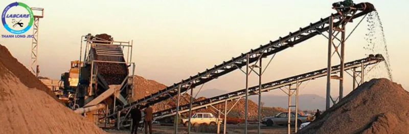
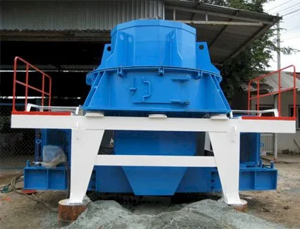
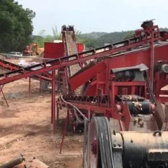

Hiện nay tình trạng khai thác cát tự nhiên đang bị siết chặt, điều này làm giá cát tự nhiên tăng lên chóng mặt. Thị trường đã bắt đầu hướng đến một loại vật liệu mới là “cát nhân tạo”. Đầu tư vào dây chuyền sản xuất cát nhân tạo phù hợp đang là hướng đi bền vững, và đúng đắn nhất hiện nay.
Điều làm các nhà đầu tư đau đầu là nên chọn công nghệ dây chuyền sản xuất cát nhân tạo nào, hãng nào ?. Khi có rất nhiều nhà cung cấp “vàng thau lẫn lộn, củi để với trầm”, thì đâu là sự lựa chọn chính xác.
Dây chuyền sản xuất cát nhân tạo phù hợp
Một số kinh nghiệm về việc CHỌN DÂY CHUYỀN SẢN XUẤT CÁT NHÂN TẠO PHÙ HỢP đang có mặt trên thị trường để các nhà đầu tư tham khảo
Việc chọn dây chuyền sản xuất cát nhân tạo phù hợp tốt phụ thuộc vào 4 tiêu chí sau:
– Chất lượng máy:. Thể hiện chất lượng gia công, chất thép. Hệ thống cơ khí nhỏ gọn, tiết kiệm điện, dao nghiền.
– Công suất:. Đạt được công suất như dự toán, tính bằng năm chứ không tính bằng ngày giờ.
– Sự ổn định: Hệ thống điều khiển hoàn toàn tự động, không phụ thuộc vào trình độ. Kinh nghiệm của người vận hành giúp tối ưu hiệu suất đầu ra.
– Tính bền bỉ: Vận hành bền lâu năm trong môi trường nghiền sàng vô cùng khắc nghiệt. Chế độ bảo hành tốt.
1. Dây chuyền sản xuất cát nhân tạo đến từ Phần Lan.
Với hơn 150 năm kinh nghiệm, trong sản xuất các dây chuyền nghiền đá và cát nhân tạo. Thanh Long JSC xứng đáng khi nhận được độ tin cậy cao, từ khách hàng khi đạt được cả 4 tiêu chí kể trên. Ứng dụng hoàn toàn công nghệ cao từ việc vận hành máy. Đồng bộ các thiết bị trong dây chuyền, để tối ưu hóa được hiệu suất làm việc cao nhất. Tiết kiệm chi phí cho nhà đầu tư. Với công nghệ đá va đá, giúp cải thiện tính sắc cạnh và hình dạng của vật liệu. Làm cho quá trình sản xuất các sản phẩm cuối cùng, đạt chất lượng cao nhất trên thị trường hiện nay.

2. Dây chuyền sản xuất cát nhân tạo khác đến từ các nước Châu âu, Nhật Bản, Hàn Quốc.
Tại Việt Nam, còn có sự góp mặt của một số hãng cung cấp dây chuyền nghiền cát nhân tạo khác như:
- Sandvik đến từ Thụy Điển – có kết cấu gọn nhẹ, bộ điều khiển thông minh. Sanvik được xem như lựa chọn số 2, cho nhà đầu tư muốn trải nghiệm công nghệ Châu Âu. Tuy nhiên Sandvik tập trung mạnh ở các thiết bị cắt, khoan và khai thác mỏ … Nên giá cho máy nghiền đá và cát còn khá cao, dịch vụ bảo hành sau lắp đặt chưa được hỗ trợ tối đa.
- Keosan Vina, đơn vị đến từ Hàn Quốc – quê hương của Samsung, xe hơi Daewoo … Tuy nhiên về trình độ cơ khí, chế tạo máy nghiền cát chưa thực sự là lợi thế. Một dây chuyền nghiền cát nhân tạo Keosan, được lắp đặt ở miền Bắc vẫn chưa mang lại hiệu quả như mong đợi cho nhà đầu tư.
- Otsuka đến từ Nhật Bản với tên tuổi lâu năm, nhưng lại mang nhược điểm lớn về sự hao hụt vật tư trong quá trình sản xuất. Làm cho chi phí đầu tư tăng dần theo thời gian.
3. Dây chuyền sản xuất cát nhân tạo đến từ Trung Quốc.

Dây chuyền sản xuất cát nhân tạo Trung Quốc với công nghệ từ Châu Âu
Ngoài Phần Lan – một trong những sự lựa chọn tốt nhất hiện nay. Với những thiết bị, linh kiện đều được làm từ những thứ tốt nhất. Còn có Shaorui (SRH), cũng là một trong những dây chuyền đáng được chú ý đến. Được sản xuất theo công nghệ và sự giám sát chặt chẽ từ các kĩ sư SRH đã thừa hưởng được chất lượng tương xứng.
Dây chuyền sản xuất cát nhân tạo Trung Quốc
Bên cạnh đó, vẫn có những dây chuyền từ Trung Quốc thường mang nhiều nhược điểm hơn ưu điểm:. Tỉ lệ thất thoát lượng hạt mịn, đặc biệt lượng bụi sinh ra trong quá trình nghiền đá thành cát rất lớn. Song phải chấp nhận xây dựng hồ lắng, ở những vùng hạn chế nguồn nước. Có cấu tạo phức tạp, thường xuyên phải vệ sinh chăm sóc kỹ thuật.
Các loại máy sản xuất cát nhân tạo hàng Trung Quốc, đang có trên thị trường Việt Nam. Một phần vì không cạnh tranh nổi với thị trường nội địa khốc liệt, nên đánh vào tâm lý của người Việt muốn mua hàng giá rẻ. Vậy nên các nhà đầu tư, dễ bị mua phải sản phẩm chất lượng kém. Chỉ sử dụng được một thời gian ngắn.
Khi sử dụng dây chuyền sản xuất cát nhân tạo, gắn mác ‘’hàng Tàu’’ đều bị ‘’lừa‘’ từ nhà sản xuất không đủ năng lực. Chất xám để tạo ra các dây chuyền có công nghệ cao. Và các hãng đang tr. Từ đó sửa chữa, thay đổi tìm ra phương án tối ưu nhất.
3. Dây chuyền sản xuất cát nhân tạo đến từ Việt Nam

Trong nước có rất nhiều đơn vị cung cấp các máy nghiền sàng. Đối với những đơn vị chuyên nghiệp, họ dành toàn thời gian để nghiên cứu. Thiết kế, chế tạo máy bài bản hơn. Họ học hỏi những ưu điểm từ châu Âu, nên sản phẩm làm ra mang rất nhiều phong cách. Nhưng do tiềm lực, công nghệ còn hạn chế nên họ vừa làm vừa cải tiến rồi dần rút ra kinh nghiệm.
Điều này cũng khiến các nhà đầu tư rất e ngại, tự ti việc chính họ phải làm “chuột bạch” cho nhà cung cấp. Đó là một trong những bất lợi cho nhà cung cấp Việt Nam, khi chính người Việt không đủ can đảm để sử dụng sản phẩm trong nước.
Ưu điểm: Tốc độ bảo hành nhanh, dễ khắc phục sự cố, linh kiện thay thế có sẵn.
Nhược điểm: Thiết kế còn đơn giản, chưa có sự ổn định về chất lượng. Giá thành chưa đủ độ cạnh tranh, chất thép không cao. Linh kiện vẫn phải nhập từ nhiều hãng không tên tuổi của Trung Quốc.
Dây chuyền này thường phù hợp với đơn vị có vốn đầu tư thấp, chấp nhận sự không ổn định.
4.Kết luận.
Lựa chọn máy còn phụ thuộc vào mỏ nguyên liệu của đơn vị, dùng làm cát nhân tạo để lựa chọn công nghệ phù hợp. Nếu nghiền sỏi thì độ hao mòn máy rất cao, nên dùng bằng công nghệ nghiền SV. Với công nghệ đá va đá, sản phẩm tạo ra sẽ có Module hạt đồng đều. Ít hạt mịn tiết kiệm dao nghiền cát, với 35.000-40.000 khối cát/ 1 bộ dao. Đây là sản phẩm bán ưu việt nhất trên thị trường. Hiện nay chưa có một đơn vị sản xuất nào, có thể tiết kiệm được dao nghiền. Đó là lí do vì sao mà máy nghiền cát của Thanh Long JSC lại có mặt ở tất cả các mỏ cát nhân tạo và sỏi sông trên hầu hết tại Việt Nam.

Máy nghiền cát và sỏi sông SV được lắp đặt tại đâu và hoạt động như thế nào, có nên chọn báo giá máy nghiền cát ?
Hiện nay trên thị trường có rất nhiều đơn vị cung cấp, tuy nhiên căn cứ vào báo giá và tính năng kĩ thuật. Thanh Long JSC luôn là sự lựa chọn số 1. Tiền điện và vật tư tiêu hao tính trên 1 khối cát, sản xuất ra quá bé so với sản phẩm của nhà cung cấp khác cùng công suất.
Điều này làm cho thiết bị trở nên đặc biệt và trên 85% các mỏ cát nghiền, sỏi sông và cát kết tại Việt Nam. Điểm qua một số địa phương như Cao Bằng, Lai Châu. Lạng Sơn, Đồng Nai. Bà Rịa-Vũng Tàu, Bình Phước. Bình Định, Ninh Thuận. Lai Châu, Sơn La. Hà Nam, Quảng Ngãi, Bình Thuận..

Công ty nào cung cấp máy nghiền cát nhân tạo giá tốt, máy nghiền sỏi sông, báo giá chính hãng:
Công ty THANH LONG chuyên cung cấp dây chuyền nghiền đá, máy nghiền côn, kẹp hàm, băng tải, sàng rung, máy nghiền cát nhân tạo, vật tư trạm nghiền chính hãng với giá tốt nhất. THANH LONG JSC đã lắp đặt hơn 45 trạm nghiền cát, đá và sỏi sông. Nghiền than từ công suất 50 khối/h đến 750 khối/h.
Hãy nhanh tay gọi cho chúng tôi theo sdt: 091- 2712- 772 để được tư vấn giải pháp đầu tư tiết kiệm và hiệu quả nhất.
Trên đây là toàn bộ những kiến thức, kinh nghiệm thực tế. Về việc lựa chọn dây chuyền sản xuất cát nhân tạo, hiện có trên thị trường Việt Nam. Hy vọng rằng, phần nào đã giúp các nhà đầu tư có cái nhìn toàn diện trước khi đưa ra quyết định lựa chọn của mình.